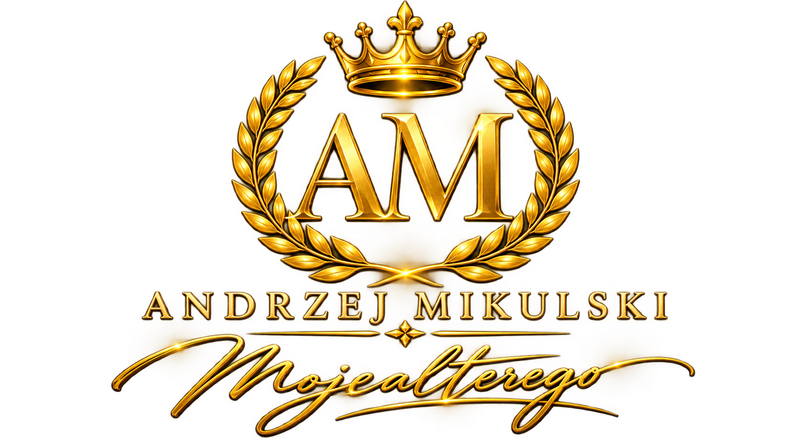

Artysta
Fotograf RP
Artystyczny tytuł uzyskany w strukturach Fotoklubu RP.

Archiwum drogi fotograficznej Andrzeja Mikulskiego — od tytułów artystycznych i medali po wystawy, kraje i pracę na rzecz fotograficznej społeczności.
Ta sekcja nie jest ścianą ozdobnych odznaczeń. To uporządkowany zapis lat pracy, wystaw, tytułów, medali i obecności w międzynarodowym obiegu fotograficznym.
Artystyczny tytuł uzyskany w strukturach Fotoklubu RP.
Międzynarodowy tytuł Artiste FIAP.
Międzynarodowy tytuł Excellence FIAP.
W 2020 roku Andrzej Mikulski dołączył do wąskiego grona polskich fotografów posiadających tytuł EFIAP. Jest pierwszym twórcą w historii Pojezierza Łęczyńsko-Włodawskiego, który zdobył tytuły AFIAP i EFIAP.
Uzyskanie tytułu AFRP.
Dwukrotne wyróżnienie lokalne.
Medal za fotograficzną twórczość.
Tytuł AFIAP oraz Srebrny Medal „Za Zasługi dla Polskiej Fotografii”.
Uzyskanie tytułu EFIAP.
Złoty Medal „Za Fotograficzną Twórczość” oraz tytuł Człowieka Roku Powiatu Cieszyńskiego.
Drugie wyróżnienie tytułem Człowieka Roku Powiatu Cieszyńskiego.
Osiągnięcia są częścią szerszej aktywności: twórczej, organizacyjnej i społecznej.
Fotografie dyplomów, medali, wystaw i wydarzeń zostaną dodane po otrzymaniu właściwych dokumentów. Nie uzupełniamy tej części fikcyjnymi materiałami.